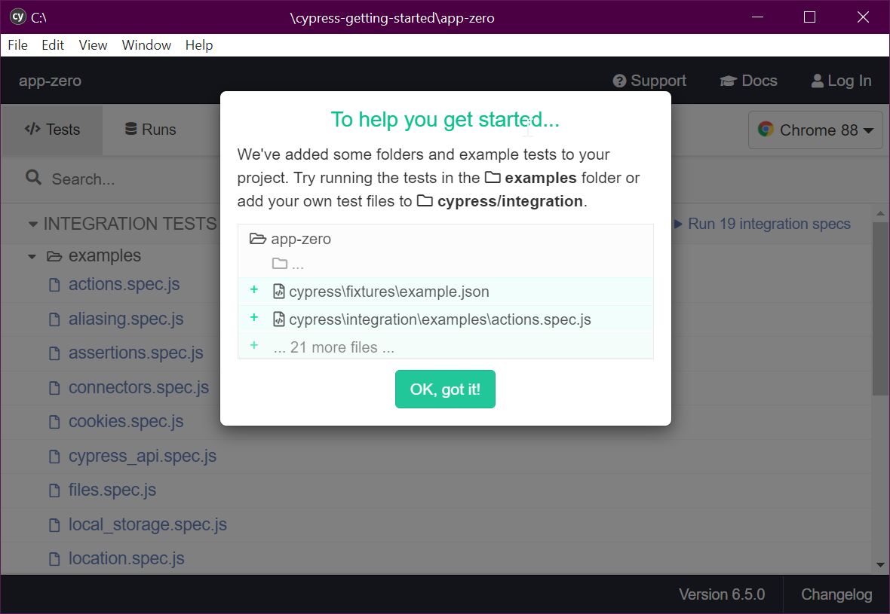
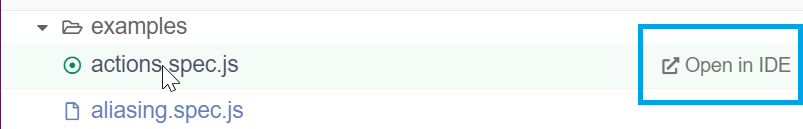
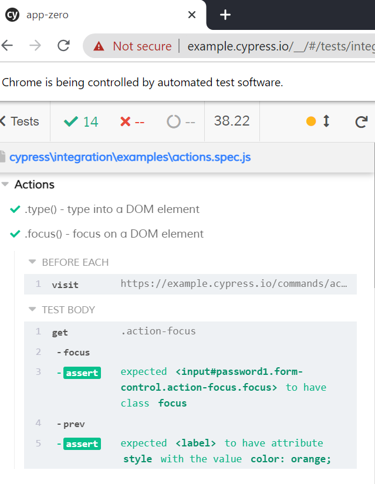
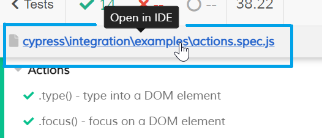
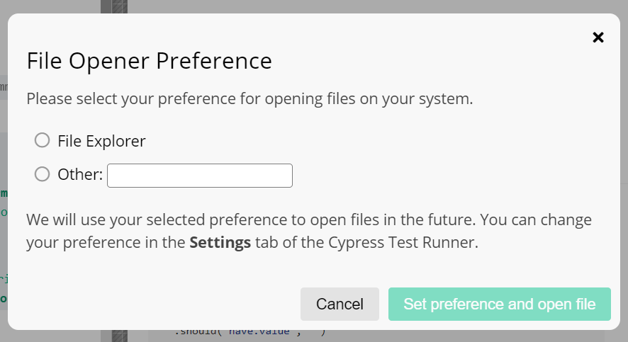

Getting Started with Cypress
Cypress is a test framework that automates a chromium browser, to provide "end to end/integration" tests of your application.
(Back in the olden times I used "WatiN" for this - which was based on "WatiR". Selenium is a more famous example. Cypress goes a lot further.)
Before we start
First create a new web project (unless you want to add cypress to an existing app... but I assume you're really "getting started".)
Start here:
npm init
... and follow the prompts to create something. Anything. You'll see it's quite irrelevant, main thing is that you end up with a package.json file.
yarn add cypress --dev
or
npm install cypress --save-dev
... first time around the step above took me 461.55s, second time it took 12.78s
Start Cypress
Open it with any of these:
./node_modules/.bin/cypress open
or
yarn run cypress open
or
npx cypress open
I see this...
It looks like this is your first time using Cypress: 6.5.0
√ Verified Cypress! C:\Users\leonb\AppData\Local\Cypress\Cache\6.5.0\Cypress

It says "Try running the tests in examples folder" (we'll do that first)
and it further recommends "add your own test files to cypress/integration"
1. running the tests in examples folder
- I clicked
action.spec.jsand choseopen in IDE

Windows Firewall warned me about an app trying to talk to the internet - I said "it's ok" and allowed it to proceed.
Now chrome starts up! Cool, and it says, in a banner "Chrome is being controlled by automated test software."
I see a test runner interface, wherein it's reported that ✔ 14 succeeded, and ❌ -- failed (which I take to mean "zero").

Expanding the second action I can see a before each section and a test body.
The steps within these is very readable, easy to inspect.
Next we'll look inside action.spec.js and see how it says this.
We could go and look for action.spec.js in the file system -- but look at this...

We can allegedly open it in the ide....
...On clicking that I get to configure the way this kind of file will be opened for inspection.

Ideally it would give you more choices, for example it should show vs code as an option for me since code is in my path variable.
sidebar: trying to get it to load in vs code
vs codeI'll check that vs code is in the system path, not just "my user" path. (see Environment variables -- view/edit them on windows
Looks like I have it in the "user" section only under C:\Users\MyUser\AppData\Local\Programs\Microsoft VS Code\bin
Before addressing that, per one of the guides online I tried restarting, to see if it was suddenly, magically listed there.
That didn't work.
Next I tried entering the full path to the executable into the file opener...
"C:\Users\MyUser\AppData\Local\Programs\Microsoft VS Code\Code.exe"
I saw in the console it said:
Could not open actions.spec.js in the editor.
The editor process exited with an error: (code 1).
...now I went in to the settings, found the "File Opener Preference" and removed the double-quotes from around the value. Suddenly it worked! Ok... that was on me. Force of habit, that when a path contains spaces I surround it in double quotes.
I still don't know if making sure VS Code was re-installed to be available for "all users" and listed in the system PATH, would be enough to have it appear in the first place.
Looking at actions.spec.js
Looking through actions.spec.js is glorious.
It's a tour of some basic actions, and how you specify them in cy language.
Here's a minimal test...
context('Actions', () => {
beforeEach(() => {
/* do this each time... */
cy.visit('https://example.cypress.io/commands/actions')
})
it('.type() - example of typing on into a DOM element', () => {
// https://on.cypress.io/type
cy.get('.action-email')
.type('fake@email.com').should('have.value', 'fake@email.com')
// now click the submit button...
cy.get('#submit-button').click()
})
})
Before adding our first test
Here is the structure of the files that cypress has added to our project...
cypress.json(file) - configure cypress, by default this file is just{}cypress/(directory)fixtures/(directory) - data used by our tests...integration/(directory) - our tests go hereplugins/(directory) - plugins to enable extra functionalitysupport/(directory) - our utils and shared code go here
These are all things that we can edit/change and will learn to change.
2. add our own test files to cypress/integration
todo examples of our own tests. include assertions.
External references
Ancient Historical Journey
- Watir - from 2006...